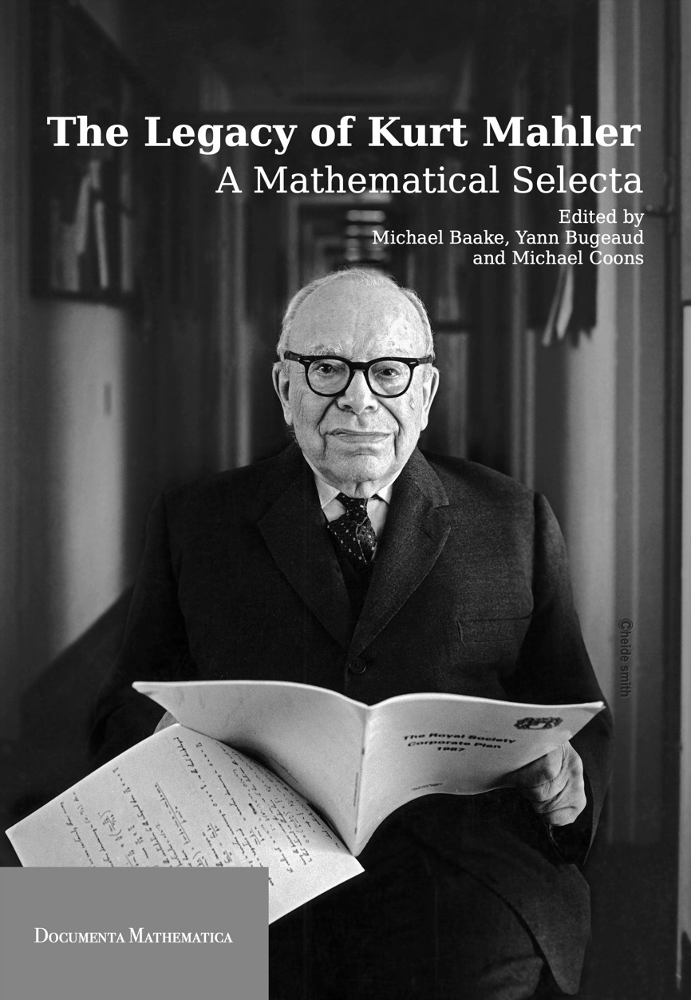

My research interests lie in pure mathematics as broadly defined. At heart, I am a problem solver. My drive to prove theorems and understand mathematical relationships has taken me to the boundaries and intersections of algebra, analysis, combinatorics, computer science, dynamical systems, fractal geometry, number theory and probability. For more information about me and my research activities please see the following links:
I am an Associate Editor of the Journal of the Australian Mathematical Society. For paper submissions and further information
see this link.
|

|
Documenta Mathematica has published my co-edited book,
with Michael Baake (Bielefeld, Germany) and Yann Bugeaud (Strasbourg, France):
|
· [Maths at CSU, Chico] ·
[Aperiodic Order at Uni. Bielefeld] ·
[J. Australian Math. Soc.] ·
|